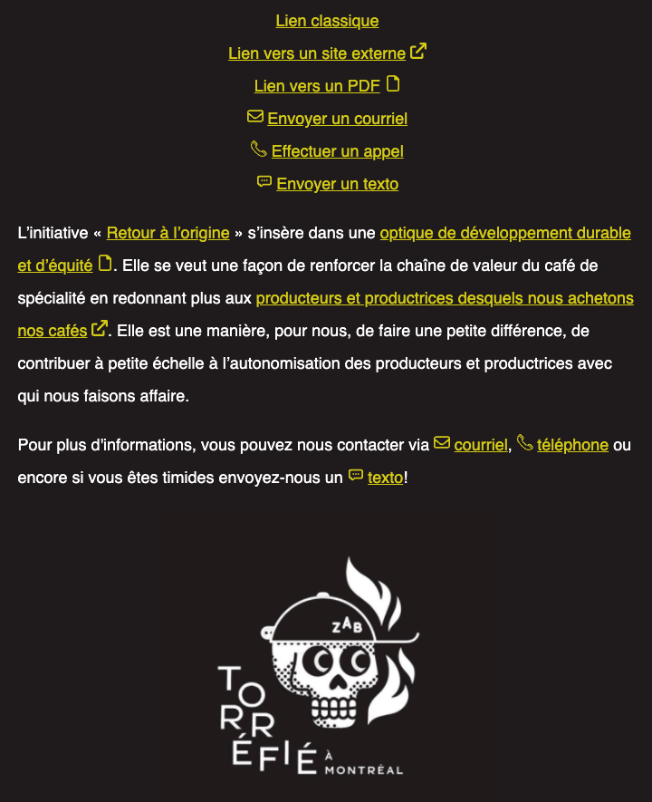

Pour cet exercice, vous devez compléter une page de blog du torréfacteur montréalais Zab Café ☕️ en la bonifiant avec des styles de liens riches.
Aperçu du résultat 👇

Matériel
Pen de départ
Couleurs 🎨
#d6d03d
Médias
Externe
PDF
Courriel
Téléphone
Texto
Vous ne devez en aucun cas modifier le HTML fourni.
Requis
Faites en sorte que tous les liens soient jaunes 🟡 et que leur effet souligné disparaisse lorsqu'ils sont survolés.
Créez des pseudo-éléments ayant une dimension correspondant à celle d'une lettre (avant ou après le lien devant contenir une icône). Faites attention de laisser un espace équivalent à 1/4 de lettre entre le texte et son icône.
Attribuez aux pseudo-éléments l'icône correspondant à leur type en image d'arrière-plan.
Afin d'attribuer les bonnes icônes, vous devrez avoir recours aux sélecteurs CSS avancés. Réviser les 3 derniers niveaux de CSS Diner est probablement une bonne idée.
Une seule règle de style par type de lien devrait permettre de styliser à la fois les liens affichés en liste, ainsi que ceux dispersés dans le texte.
Notes de cours 📚
Pseudo-éléments
Sélecteurs avancés
Background